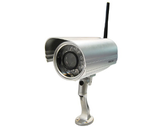
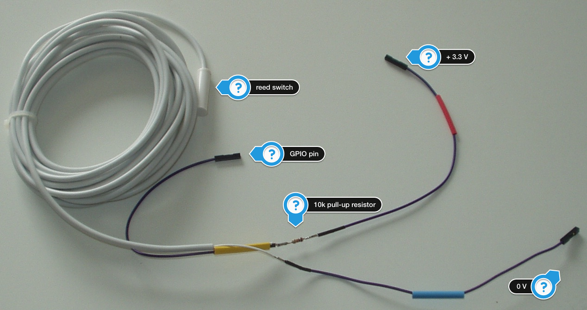
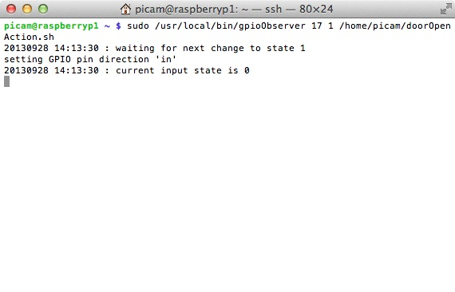

Poor man's surveillance system with Raspberry Pi
A few days ago I've bought an IP camera from Foscam.

The result was very disappointing. Besides the fact that this thing was D.O.A. (it lost its network connection every 10-15 seconds and never transferred one single image), the web interface was for lack of a better word: bullshit. That thing went straight back and they didn't convince me to order another one. Even the max. resolution of the camera was not as advertised.
So I wanted an IP camera, a Raspberry PI was already at home. It could simply be extended to use wireless LAN and there is a camera module available. ding ding ding It's project time :-)
Instead of a infrared motion sensor or even a fancy is there a movement in the picture algorithm I decided to go vintage. Using a reed switch it is quite easy to check if a door or window has been opened. The Raspberry Pi has a GPIO interface, connecting an external switch to the little computer is almost foolproof. You just need a pull-up resistor and you are ready to go.


That's for the switch part.
For wireless connection I've attached a Logilink WL0145 (sorry, it's in German). Worked like a charm at first sight but the adapter lost connection after one day. There seems to be a problem with the power management, so it's simply siwtched off (runf iwconfig to see if it's on), edit /etc/network/interfaces and put a line with wireless-power off in there.
Maybe that's not enough, future will tell. But there is help out there.
Almost a year ago I started learning C++, so it became clear that a tiny bit of the software side would be coded in C++. The first examples I found showed some kind of bash command that read in the status of a GPIO pin and then slept for some time and that in an endless loop. This would be the first time that I would write code in C++ for Linux, so the Qt framework comes into mind to even out the platform specific details. Not knowing the exact implementation details of a QTimer, I sensed that it would be a tiny bit more elegant to use a timer that calls a function, which pulls the status of the GPIO pin. There is even a Debian Wheezy based kernel out there that would enable the use of interrupts but I couldn't find any examples, details, whatsoever.
The first kind of library to access those pins from C++ that I found was http://hertaville.com/2012/11/18/introduction-to-accessing-the-raspberry-pis-gpio-in-c/. So I used it.
The outcome is gpioObserver
When started on the command line it waits for a given GPIO pin to change its status to the desired one and then call an external program, e.g. raspivid.
For reading the status of a GPIO pin you must be root, sudo as user pi or edit /etc/sudoers with visudo in such a way that you can sudo gpioOberserver from a regular Linux user.
To get started, install the Qt environment on your Debian Wheezy Image, download the code from Github and compile.
$ git clone https://github.com/hardcodes/gpioObserver.git
Compile with
$ qmake
$ make
$ sudo make install
The executable will be installed as /user/local/bin/gpioObserver. You can sudo it as user pi or add a new user and work on /etc/sudoers if you want that task separated.
gpioObserver waits for a signal change from 0 to 1 and then starts a batch script that mounts a drive on a NAS system, records a videofile with raspivid and unmounts the drive again. Start gpioObserver from crontab, e.g. like
@reboot /bin/sudo /usr/local/bin/gpioObserver 17 1 /home/picam/doorAction.sh >> /home/picam/log/doorAction.log 2>&1

TADA - your poor man's surveillance system with Raspberry Pi
Update
Today I would use Rust to write this little program.